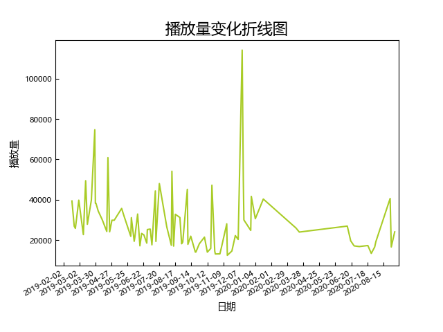

X3.0(20190120-20200911)（第二次组阁至北京成员首演）

场次：
82（普通场：42）
平均播放量：
28415（所有公演），24375（普通公演）
中位播放量：
24280（所有公演），23445（普通公演）
标准差：
15324（所有公演），8848（普通公演）
播放量前三：
- 遗忘的国度首演(114059)
- Girl X首演(74665)
- X队四周年(60880)
播放量变化分析：
年初相对18年略有上升，全年一直呈下降趋势，遗忘的国度上演初期有所回升，此后再度下降
高播放量公演推荐：
- 遗忘的国度首演：看汪九潇洒渣男舞曲
- X队四周年：X队传统N连。
- 19年祁静生诞：著名修罗场不知道几.0
- 190313命运的X号：太上皇亲临台下视察工作，mc1请放大音量听call
- 19年汪佳翎生诞：代到了被直女好朋友温柔拒绝的本人。灰的爆破过于好笑
- 19年冯晓菲生诞：我很喜欢这场的编排。九灰爆破现场
- 200827遗忘的国度：九灰千秋乐。水灰招魂日
- 命运的X号千秋乐：命X后期难得的一次爆炸《新航路》call。某个著名剧场call视频好像就是这场的cut